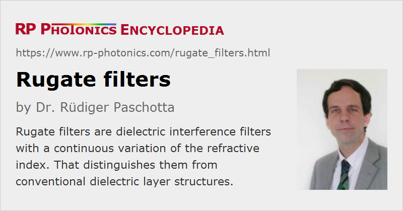

Rugate Filters
Definition: dielectric interference filters with a continuous variation of the refractive index
Alternative term: gradient-index filters
More general term: optical filters
Categories: general optics, photonic devices
How to cite the article; suggest additional literature
Author: Dr. Rüdiger Paschotta
Rugate filters are optical filters based on a dielectric coating, where the refractive index is varied continuously (rather than in steps) at least in some part of the structure. Such devices are also called gradient-index filters in order to distinguish them from the conventional step-index filters.
The simplest example is a structure with a sinusoidal oscillation of the refractive index, leading to reflection in some narrow wavelength region. In transmission, one obtains a notch filter, which blocks some limited wavelength range, while in reflection one obtains a bandpass filter. Such filters are used, for example, as laser blocking filters in Raman spectroscopy. It is also easily possible to combine multiple reflection bands (see below) in order to obtain multiple notch filters, for example.
Fiber Bragg gratings can in principle also be considered as rugate filters.
Fabrication of Rugate Filters
There are different techniques for obtaining a continuous variation of the refractive index in a dielectric coating:
- The probably most common approach is to fabricate mixtures of two different coating materials with a variable mixing ratio. For that purpose, one may use double electron beam coevaporation or similar methods (also using resistance heating or ion beam sputtering) with material pairs such as ZrO2 / MgO, ZrO2 / SiO2, Ta2O5 / TiO2 or TiO2 / SiO2. Depending on the detailed growth conditions (composition, substrate temperature, etc.), polycrystalline or amorphous structures can result.
- For some coating materials such as TiO2, the packing density can be varied during vapor deposition, e.g. by control of the oxygen partial pressure or by glancing angle deposition. The packing density directly affects the refractive index [11]. Such techniques are also applied to porous silicon rugate filters [10].
A challenge arises from the fact that a precise refractive index control is more difficult to obtain for gradient-index structures. For high precision, automatic computer control is required, based on online growth monitoring and a sophisticated algorithm. When deviations from the target values are detected during growth, the rest of the structure is automatically adapted such as to compensate the errors as far as possible.
Optical Properties of Rugate Filters
In comparison with filters based on standard dielectric coatings, rugate filters provide some special potentials:
- A sinusoidal oscillation of the refractive index can create an isolated peak in the reflectance spectrum, without any significant sidebands as are obtained for ordinary Bragg mirrors. Such sidebands essentially arise from the higher-order Fourier components of a rectangular oscillation. However, a clean filter behavior of that type requires two additional measures: avoiding additional reflections from the ends and apodization. Ref. [15] gives an example.
- It is possible to linearly superimpose multiple oscillations of the refractive index in order to combine multiple reflection features.
- Rugate filters have also been reported to have substantially higher laser-induced damage thresholds [12], compared with conventional filters.
Analysis, Design and Optimization of Rugate Filters
For a theoretical analysis, a gradient-index coating structure can be approximated by a step-index structure with a larger number of steps, such that the index change from one “layer” to the next one becomes very small. Therefore, conventional software developed for step-index structures can in principle be used. However, one has to deal with a large number of “layers” and requires an efficient method to specify the structure, as it is not convenient to enter hundreds or thousands of externally computed refractive index values into such software. One will usually desire to have the whole structure automatically computed from some set of parameters such as a medium refractive index, an oscillation amplitude, and parameters for apodization. Also, it is often necessary to combine the rugate structure with additional parts such as anti-reflection coatings.
Simple filter curves can be obtained with analytical designs. For more complex designs, one can use the inverse Fourier transform method, where one essentially exploits the fact that at least for low reflectivities, the reflection spectrum is related to the Fourier transform of the spatial index profile. The method can be modified to work also with high reflectivities [2].
There are also other techniques for the numerical optimization of rugate filters. Here, one will usually not optimize layer thickness values, as is common for step-index structures, but rather the details of the refractive index profile. The most convenient approach is usually obtained when the structure can be parametrized as explained above. One then varies these parameters such as to minimize some kind of merit function, which “punishes” deviations from the desired optical properties.
Suppliers
The RP Photonics Buyer's Guide contains 6 suppliers for rugate filters. Among them:
Questions and Comments from Users
Here you can submit questions and comments. As far as they get accepted by the author, they will appear above this paragraph together with the author’s answer. The author will decide on acceptance based on certain criteria. Essentially, the issue must be of sufficiently broad interest.
Please do not enter personal data here; we would otherwise delete it soon. (See also our privacy declaration.) If you wish to receive personal feedback or consultancy from the author, please contact him e.g. via e-mail.
By submitting the information, you give your consent to the potential publication of your inputs on our website according to our rules. (If you later retract your consent, we will delete those inputs.) As your inputs are first reviewed by the author, they may be published with some delay.
Bibliography
| [1] | J. A. Dobrowolski and D. Lowe, “Optical thin film synthesis program based on the use of Fourier transforms”, Appl. Opt. 17 (19), 3039 (1978), doi:10.1364/AO.17.003039 |
| [2] | P. G. Verly et al., “Synthesis of high rejection filters with the Fourier transform method”, Appl. Opt. 28 (14), 2864 (1989), doi:10.1364/AO.28.002864 |
| [3] | W. J. Gunning et al., “Codeposition of continuous composition rugate filters”, Appl. Opt. 28 (14), 2945 (1989), doi:10.1364/AO.28.002945 |
| [4] | B. G. Bovard, “Rugate filter design: the modified Fourier transform technique”, Appl. Opt. 29 (1), 24 (1990), doi:10.1364/AO.29.000024 |
| [5] | H. Fabricius, “Gradient-index filters: designing filters with steep skirts, high reflection, and quintic matching layers”, Appl. Opt. 31 (25), 5191 (1992), doi:10.1364/AO.31.005191 |
| [6] | J. R. Jacobsson, “Review of the optical properties of inhomogeneous thin films”, Proc. SPIE 2046, 2 (1993) |
| [7] | B. A. Tirri et al., “Gradient index film fabrication using optical control techniques”, Proc. SPIE 2046, 224 (1993) |
| [8] | J.-S. Chen et al., “Mixed films of TiO2-SiO2 deposited by double electron-beam coevaporation”, Appl. Opt. 35 (1), 90 (1996), doi:10.1364/AO.35.000090 |
| [9] | J.-G. Yoon et al, “Structural and optical properties of TiO2-SiO2 composite films prepared by aerosol-assisted chemical-vapor deposition”, J. Korean Phys. Soc. 33 (6), 699 (1998) |
| [10] | K. Kaminska et al., “Simulating structure and optical response of vacuum evaporated porous rugate filters”, J. Appl. Phys. 95 (6), 3055 (2004), doi:10.1063/1.1649804 |
| [11] | M. Jerman et al., “Refractive index of thin films of SiO2, ZrO2, and HfO2 as a function of the films' mass density”, Appl. Opt. 44 (15), 3006 (2005), doi:10.1364/AO.44.003006 |
| [12] | M. Jupé et al., “Laser-induced damage in gradual index layers and Rugate filters”, Proc. SPIE 6403, 640311 (2006), doi:10.1117/12.696130 |
| [13] | A. V. Tikhonravov et al., “New optimization algorithm for the synthesis of rugate optical coatings”, Appl. Opt. 45 (7), 1515 (2006), doi:10.1364/AO.45.001515 |
| [14] | A. Thelen, Design of Optical Interference Coatings, McGraw–Hill (1989) |
| [15] | Development of a rugate filter with the RP Coating software |
See also: optical filters, dielectric coatings, Bragg mirrors, fiber Bragg gratings
and other articles in the categories general optics, photonic devices
|  |
If you like this page, please share the link with your friends and colleagues, e.g. via social media:
These sharing buttons are implemented in a privacy-friendly way!